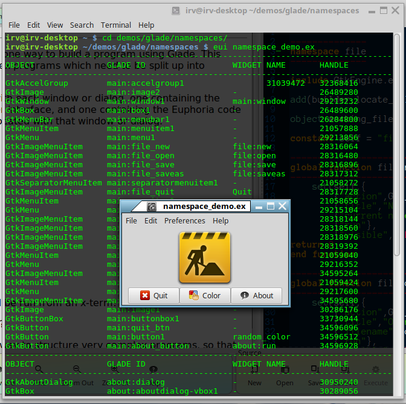

The files in this folder demonstrate one way to build a program using Glade. This scheme is suitable for more-complex programs which need to be split up into 'modules' for easier maintenance.
There will be two files associated with each window or dialog, one containing the Glade xml, which describes the user interface, and one containing the Euphoria code which responds to user events assocated with that window or dialog.
This simple program consists of:
Note: namespace_demo.ex should be run from an x-term!
Doesn't look so simple now, does it?
Nevertheless, this is in fact a good way to structure very complex programs, so that you can locate and modify things without searching through page after page of code.
In addition, working in this 'modular' way also makes it less likely you will completely ruin your program by clicking the wrong thing in the Glade designer. Trust me, it's easy to do.
Note that it is generally a good idea to name the files similarly: e.g. about.glade and about.e. This makes namespacing simpler. Also, note how simple and clean the code is in each of these *.e modules!
There's a possible drawback to this scheme, in that all the functions called from Glade must be declared as global.